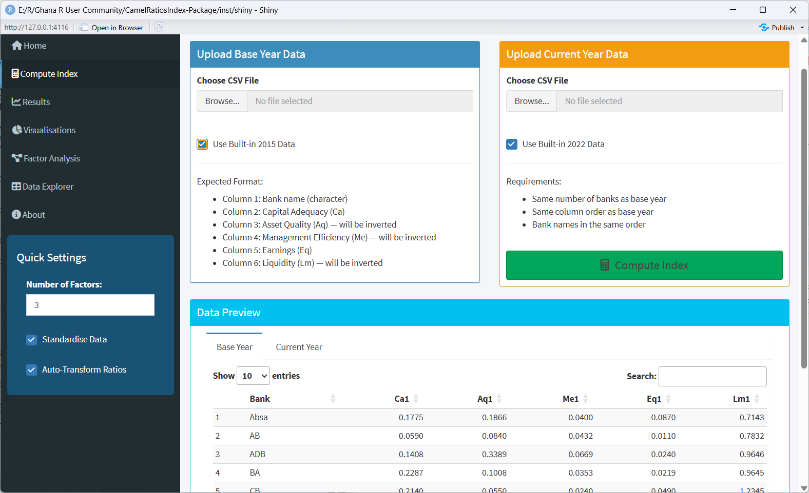
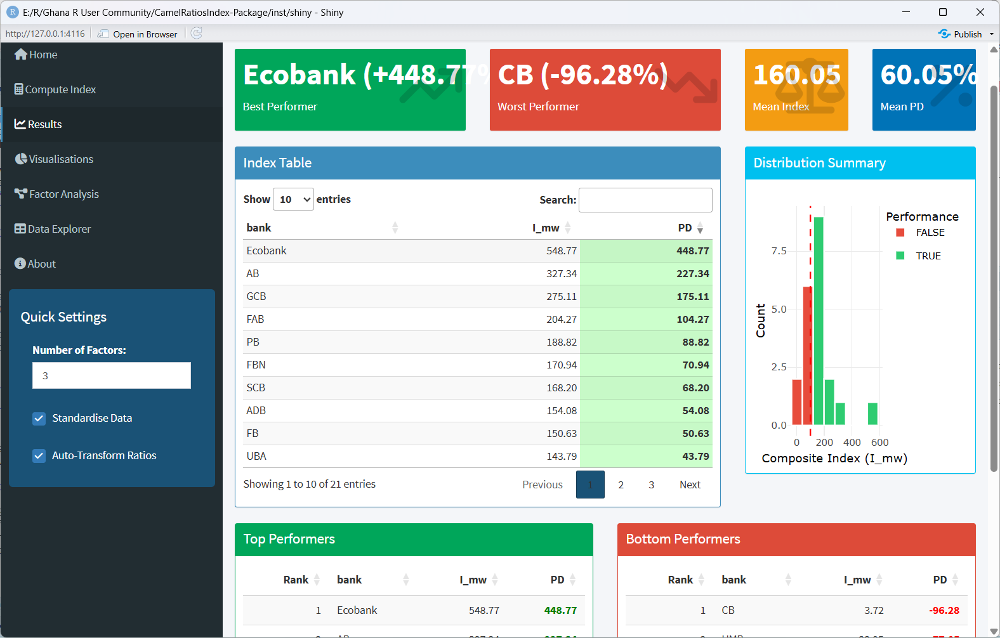
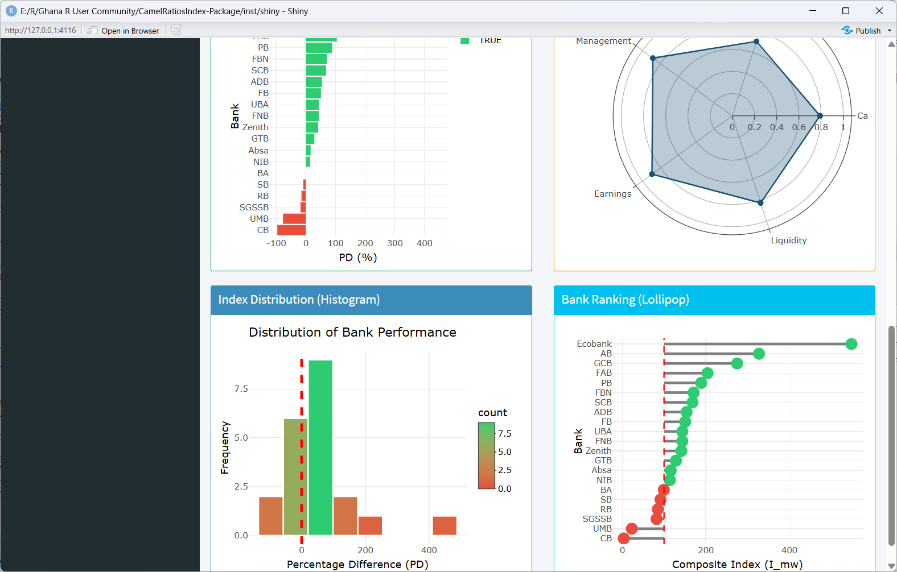
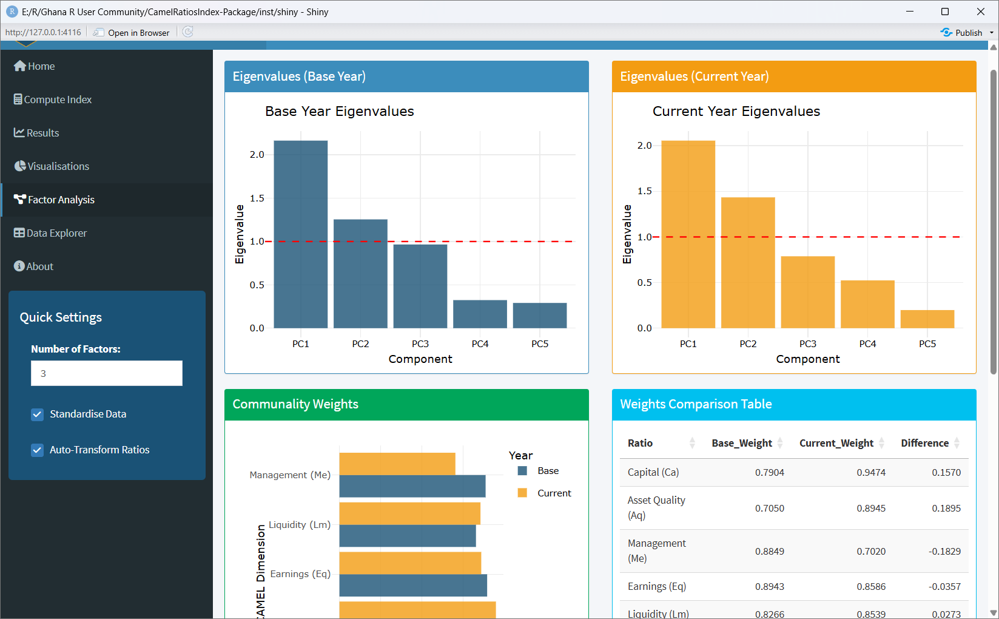

Overview
The CamelRatiosIndex package includes a fully interactive Shiny dashboard that provides a graphical interface for computing and exploring CAMEL indices. The dashboard is ideal for:
- Regulators who need quick visual summaries without writing code
- Students learning about the CAMEL framework
- Presentations where live computation adds impact
- Exploratory analysis before formal reporting
Launching the Dashboard
library(CamelRatiosIndex)
# Launch with default settings
launch_dashboard()
# Launch on a specific port (useful for servers)
launch_dashboard(port = 3838, host = "0.0.0.0")Dashboard Features
2. Compute Index
- Upload custom CSV files or use built-in example data
- Adjust number of factors
- Toggle data standardisation
- Preview uploaded data before computation

3. Results
-
Value boxes: Best/worst performers, mean index, mean PD -
Interactive table: Sortable, searchable index results with colour-coded PD -
Distribution plot: Histogram of index values -
Top/bottom performers: Quick summary tables -
Download buttons: Export results as CSV, Excel, or RDS
4. Visualisations
-
Line plot: Percentage differences across all banks with highlighting -
Bar chart: Horizontal comparison with colour-coded performance -
Radar chart: CAMEL weight distribution (base year) -
Histogram: Distribution of performance differences -
Lollipop chart: Bank ranking relative to base year
5. Factor Analysis
-
Eigenvalue plots: Scree plots for base and current years -
Communality weights: Bar chart comparing base vs current weights -
Weights table: Numerical comparison with differences -
Factor loadings table: Full loading matrix from base year
Data Upload Format
The dashboard accepts CSV files with this exact structure:
| Column | Name | Description |
|---|---|---|
| 1 | Bank | Bank identifier (character) |
| 2 | Ca | Capital Adequacy ratio |
| 3 | Aq | Asset Quality ratio |
| 4 | Me | Management Efficiency ratio |
| 5 | Eq | Earnings ratio |
| 6 | Lm | Liquidity ratio |
The dashboard automatically inverts Aq, Me, and Lm (higher = worse performance).